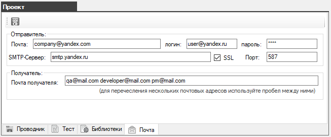

Отправить отчет о провале автотеста на почту
В окне "Проект" настраивается подключение к почтовому серверу.
В данном примере используется почтовый ящик Yandex.

Чтобы использовать функцию отправки отчета на почту нужно включить эту опцию в автотесте с помощью метода BrowserEnableSendMailAsync
public async Task setUp()
{
await tester.BrowserEnableSendMailAsync(true, false); // только в случае провала
await tester.BrowserEnableSendMailAsync(false, true); // только в случае успеха
await tester.BrowserEnableSendMailAsync(); // в обоих случаях
}
В случае провала на перечисленные почтовые адреса будет отправлен отчет следующего вида

В письме будет вложен скриншот в момент ошибки и отчет с шагами выполнения, а так же пользовательские сообщения.


Отправить письмо можно в любой момент, для этого нужно использовать функцию SendMsgToMailAsync
public async Task tearDown()
{
if(tester.GetTestResult() == Tester.PASSED)
{
await tester.SendMsgToMailAsync("Тестовое сообщение", "Тест завершился успешно");
}
}
Created with the Personal Edition of HelpNDoc: Free EPub producer